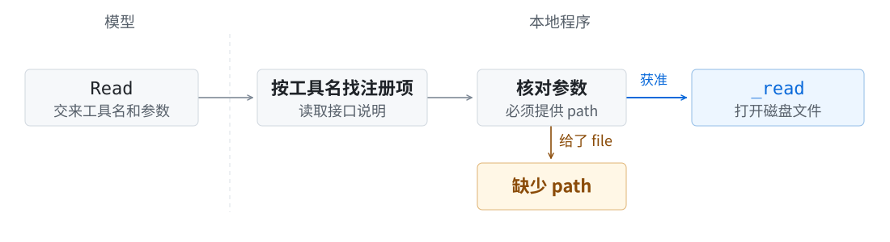

模型开口要读文件，谁真正去读？
上一章里，程序读出 prices.mjs 的公式，再把它交给模型。现在拨回那条读取请求刚到的时候，只把参数名 path 改成 file。模型交来 Read({"file":"prices.mjs"})，程序却说缺少 path。它已经认出了 Read，那份文件为什么还没打开？
本地程序怎样认出 Read
先看这次的回包。程序能点出 Read 缺少哪个字段，说明它已经按工具名找到了登记，也拿到了登记里的参数要求。它是在核对参数时发现 file 写错了名字，这次调用还没交到读取函数手里。先把字段补对，再沿图找出谁负责读。
{"path": "prices.mjs"}
顺着图的右半边找。程序启动时把 readFileTool 放进注册表，register() 用工具名做索引，所以收到 Read 就能拿到登记对象。登记里存着必填的 path，还用 handler=_read 指明由谁干活。以后加一个新工具，程序也靠这条对应关系找到它。 内置工具登记 · 注册表按名保存
发请求时，程序从这份登记取出名字和参数说明，模型才能从工具清单发现 Read。执行函数还留在本地，程序用工具名找到它，等参数和权限过关再调用。CoreCoder 用同一个 Tool 上的 schema() 和 execute() 对应这两件事。若存的对外参数通常由本地 schema 转换，给接口单独指定 apiParameters 时就要维护两份约定。如果对外写着 path 可不填，本地仍会拒绝少了 path 的调用。CoreCoder《工具系统》
查阅 Tool 登记怎样生成对外接口
src/ruocun/tools/types.py · 第 106–117 行
@dataclass(frozen=True)
class Tool:
name: str
description: str
schema: dict[str, Any]
capability: Literal["read", "write", "exec", "plan", "network"]
handler: Callable[[dict[str, Any], ToolContext], Awaitable[str]]
descriptionEn: str | None = None
apiParameters: dict[str, Any] | None = None
checkPermissions: Callable[[str], Literal["deny", "ask"] | None] | None = None
shouldDefer: bool = False
persistentEffect: bool = False # 需要独占执行并持久记录意图，原有能力标签仍用于权限判断。接口说明和本地执行共用这份登记。CoreCoder 的 Tool 也把两件事放在一起，schema() 从当前对象取名字、描述和参数，execute() 实现具体操作；若存把处理器作为字段登记。看 toApiTools() 怎么取字段。parameters 默认由本地 schema 转换，也可以明确给出 apiParameters，例如适配另一种对外接口。本地实际校验继续以 schema 为准，两份定义若都写了，维护时就要核对它们是否会引导模型填出程序能接受的参数。 CoreCoder《工具系统》
src/ruocun/tools/registry.py · 第 107–114 行
for tool in self._tools.values():
if predicate is not None and not predicate(tool):
continue
deferred = tool.shouldDefer and tool.name not in self._activated_deferred
if deferred and hideUnactivatedDeferred:
continue
description = tool.descriptionEn if lang == "en" and tool.descriptionEn else tool.description
parameters = copy.deepcopy(tool.apiParameters) if tool.apiParameters is not None else toJsonSchema(tool.schema)src/ruocun/tools/registry.py · 第 119–121 行
result.append({"type": "function", "function": {
"name": tool.name, "description": description, "parameters": parameters,
}})把 file 改成 path，假设文件仍在刚才的目录，访问也获准。现在看看本地的 dispatch() 怎样把这次调用交给读取函数。
src/ruocun/tools/registry.py · 第 186–191 行
async def dispatch(self, name: str, rawArgs: str, ctx: ToolContext) -> str:
args = self.validate(name, rawArgs)
tool = self._tools[name]
if ctx.signal.is_set():
raise InterruptedError("工具调用已取消")
return await tool.handler(args, ctx)self._tools[name] 找到本地登记的 Read。参数核对过、也没有收到取消信号时，tool.handler(args, ctx) 才把参数和工作目录等信息交给 _read，让它去打开文件。
同样没读到内容，该改哪一步？
开头的 {"file":"prices.mjs"} 能解析成 JSON，但缺了登记要求的 path。要是只回一句“读取失败”，模型可能去搜文件，即使找到了也补不上那个字段。程序怎样把错误说准？
若存检查的是这次将要执行的输入。配置了前置 Hook 时，Hook 可能先改写参数，批次拿最终参数调用 registry.validate()。注册表再对照工具自己的 schema。这次调用的编号仍是 read_price。path 缺失时，程序用这个编号回一条参数错误。这一项还没进审批，也没进入读取处理器。
src/ruocun/tools/tool_batch.py · 第 177–189 行
if tool is not None and hooks is not None:
hook_ctx = RunCtx(hook_cwd, tool_name=name, args_json=raw, payload={"tool": name, "args": raw})
selected = hooks.matching("PreToolUse", hook_ctx)
if selected:
outcome = await _invoke_tool_hook(hooks, "PreToolUse", call_id, hook_ctx, ctx.signal, selected, journal)
pre_hooks[call_id] = outcome
decision = "deny" if outcome.block else outcome.permission_decision
if outcome.updated_input is not None:
raw = hookJSON(outcome.updated_input)
if ctx.signal.is_set():
results[call_id] = _message(call_id, _CANCELLED)
continue
args = registry.validate(name, raw)模型在这次工具回包里看到 tool_call_id="read_price"，正文点出了 Read 缺少必填参数「path」(string)，还提醒它传来的是 file。它下一次该提交 Read({"path":"prices.mjs"})。这个修改让请求通过参数校验，接下来才有机会核对访问许可并打开文件。
src/ruocun/tools/tool_batch.py · 第 196–204 行
except (ValueError, TypeError, KeyError) as exc:
if tool is not None and decision == "deny":
denied_call = BatchCall(call_id, tool, raw, decision)
results[call_id] = _message(call_id, hook_denied(denied_call))
await audit(denied_call, "hook-deny")
continue
results[call_id] = _message(call_id, f"Error: 工具参数无效：{exc}")
if tool is not None:
await audit(BatchCall(call_id, tool, raw, decision), "invalid")CoreCoder 也先用 bind() 核对参数能否配上处理器签名，再执行函数，避免把处理器自己的 TypeError 报成缺参数。现在只把行号从数字改成 "2"。若替两边都填对各自的路径字段，CoreCoder 会通过参数绑定，到处理器做 offset - 1 时才碰到字符串不能减整数。若存的 schema 已明确行号要用整数，这次会停在派发前。CoreCoder《主循环》工具错误一节 · 若存参数校验
保持改好的 Read({"path":"prices.mjs"})，这次只换一个条件。程序切进第 2 章的 discount 工作树，从树根执行，文件仍在 packages/pricing 下面。参数检查和访问许可都通过，处理器沿短路径查不到文件，才会得到 Error: 工具读取失败（FileNotFoundError）。 原样再发只会查同一处。先追订单预览的导入路径，若发现它用的是 packages/pricing/prices.mjs，就把这段完整相对路径交给 Read。权限被拒时，反馈还会单独指出操作没获准。执行裁决篇 · 远端工具与本地校验
还有一次可能读取成功，却打开了 examples/prices.mjs。回包里的公式也是真的，只是订单预览根本没用这份文件。看回包能判断哪一步发生了，能否回答用户的问题还要核对读到的材料。
试判 · 搜到两份同名文件，重读哪一份？
一次回包对 Read({"path":"prices.mjs"}) 返回了 Error: 工具读取失败（FileNotFoundError）。 你已切到新工作树根目录。搜索找到 examples/prices.mjs 和 packages/pricing/prices.mjs。订单预览要引用其中一份。仅凭回包和文件名能决定读哪份吗？下一步先查哪里？
展开判断
当前请求的字段已通过校验，程序在实际读取时找不到那个短路径。从根目录读，得带上对应的子目录名。两份文件都能成为合法路径，先查订单预览的导入路径，沿着引用找到生效的那份，再把这个完整的相对路径填入 path。
从第 8 行读到第 10 行，参数怎么填？
如果只想看这份文件的第 8 至第 10 行，就发 Read({"path":"prices.mjs","offset":8,"limit":3})。起始行也算一行。把 limit 填成 10 会请求从第 8 行起最多十行，文件够长便读到第 17 行。
path 是必填项。文本的 offset 和 limit 可以省略，分别默认为第 1 行和最多 2000 行。程序用 JSON Schema 登记字段、类型和必填项。刚才失败的 file 就不属于这份约定。
查阅 Read、Edit、ToolSearch 的完整参数
src/ruocun/tools/read_file.py · 第 117–122 行
schema=objectSchema({
"path": {"type": "string", "description": "相对工作区根目录的文件路径"},
"offset": {"type": "integer", "minimum": 1, "description": "起始行号(1-based,含)"},
"limit": {"type": "integer", "minimum": 1, "description": "最多读取的行数"},
}, ["path"]), capability="read", handler=_read,
)| 工具 | 字段 | 接口及省略行为 |
|---|---|---|
| Read | path | 必填字符串。相对路径以工具工作目录为起点，缺省时回到工作区根。 |
| Read | offset / limit | 可选整数，均至少 1。文本默认从第 1 行起最多显示 2000 行。 |
| Edit | path / old_string / new_string | 三项必填字符串。分别是文件路径、去掉展示行号的原文、替换内容。空的新文本删除匹配片段。 |
| Edit | replace_all | 可选布尔值，省略按 false 处理。默认要求原文恰好出现一次，传 true 可替换全部命中。
|
| ToolSearch | query | 必填字符串，长度至少 1。搜索时去两端空白，忽略大小写，匹配工具名或描述。去空白后为空时，提示补充关键词。 |
src/ruocun/tools/edit_file.py · 第 119–125 行
schema=objectSchema({
"path": {"type": "string", "description": "相对工作区根目录的文件路径"},
"old_string": {"type": "string", "description": "要被替换的原文(需唯一)"},
"new_string": {"type": "string", "description": "替换成的新文本"},
"replace_all": {"type": "boolean", "description": "是否替换全部出现"},
}, ["path", "old_string", "new_string"]), capability="write", handler=_edit,
)读回来的文本和图片，各交给谁？
选好了要读的路径和行数，程序还得知道从哪里打开文件。_read() 同时拿到模型的 args 和程序的 ToolContext。后者带着工作目录、取消信号和程序已有的读文件记录。第一份决定这次要读什么，第二份提供真正执行这次读取所需的环境和状态。
想想同时读文件时，两个结果该放到哪儿。假如模型要求核对两张订单预览截图，试着把它们放进一个共享的图片槽。一次读取刚写好自己的图片，另一次读取再写同一个槽，先读完的调用就有可能拿到后存入的那张。因此批次用 replace(ctx, currentImageData=None) 给每次 Read 自己的槽，回包时取本次调用的图片，交给本次编号。 批次中的逐次图片槽
读取价格文本时，程序还要留下路径、读取前的修改时间与文件大小，下一次 Edit 才能核对文件是否还是那一版。这份记录要跨调用使用，所以它最终回到会话的共享映射。下面的 worker_ctx 先把工作线程自己的记录装起来，await 返回后才在业务循环里合并，避免界面恰好遍历记录时，后台线程又在改它。
src/ruocun/tools/read_file.py · 第 30–43 行
if ctx.signal.is_set():
raise InterruptedError("工具调用已取消")
# 后台线程使用独立的读取记录。回到业务循环再更新共享基线，避免界面同时遍历时遇到写入。
worker_ctx = replace(ctx, readFiles=set(), readMeta={}, currentImageData=None, onFileAccessed=None)
text, accessed = await asyncio.to_thread(_read_text, absolute, args, worker_ctx)
for path in worker_ctx.readFiles:
ctx.readFiles.add(path)
for path, meta in worker_ctx.readMeta.items():
ctx.readMeta[path] = meta
if worker_ctx.currentImageData is not None:
ctx.currentImageData = worker_ctx.currentImageData
if accessed and ctx.onFileAccessed is not None:
ctx.onFileAccessed(absolute)
return text图片分支读出图片就返回，不会执行后面记录文本基线的代码。模型可以拿截图判断页面显示了什么。想编辑背后的 prices.mjs，还要从源码取得真实的旧文字和读前基线。程序把状态放在哪儿，要看谁在什么时候消费它。 图片和文本的两个分支
少用的工具，用到再公布
知道文件叫 prices.mjs，一次 Read 就有用。换成刚接手一个陌生的商城仓库，连价格从哪个模块进来都不知道。这时可以先请 RepoMap 列出仓库的关键定义。它早已登记在册，但若存把它标成 shouldDefer=True，意思是把完整的接口说明留到用得上时再发。 RepoMap 的工具定义
模型通常只做少数几种动作。如果它每次读一小段代码都收到所有工具的长描述和参数，很多内容就会反复挤占输入空间。apiToolsForMode() 组装可见清单时会过滤未激活的延迟工具，也会按模式过滤。计划模式进一步省去远程 MCP 工具和标记为写入或执行的工具。执行时还会另行核对许可。
src/ruocun/tools/tools_for_mode.py · 第 10–13 行
def apiToolsForMode(registry: ToolRegistry, mode: Mode, lang: str | None = None) -> list[ApiTool]:
if mode == "normal":
return registry.toApiTools(lambda tool: registry.isMcpVisible(tool.name), lang, hideUnactivatedDeferred=True)
return registry.toApiTools(lambda tool: not tool.name.startswith("mcp__") and tool.capability not in ("write", "exec"), lang, hideUnactivatedDeferred=True)当模型需要先看仓库结构，可以发 ToolSearch({"query":"RepoMap"})。处理器把关键词交给运行环境提供的 searchTools，由当前注册表做匹配。
src/ruocun/tools/tool_search.py · 第 12–22 行
async def _handler(args: dict[str, Any], ctx: ToolContext) -> str:
return ctx.searchTools(args["query"]) if ctx.searchTools else "当前环境不支持工具搜索。"
toolSearchTool = Tool(
"ToolSearch", _metadata["description"], {
"type": "object", "properties": {"query": {"type": "string", "minLength": 1,
"description": "搜索关键词(匹配工具名或描述,不分大小写)"}}, "required": ["query"],
"additionalProperties": False,
}, "read", _handler, descriptionEn=_metadata["descriptionEn"],
)注意 self._activated_deferred.add(tool.name)。这行改变了注册表里的激活集合，所以有两个可见变化。第一，这次工具回包就会带回 RepoMap 的用途和参数。第二，程序下次重建可用工具清单时，会带上已经激活的完整定义。要常驻那份说明还是等第一次搜索，取决于每次请求的占用和首次使用多一次搜索之间的取舍。
src/ruocun/tools/registry.py · 第 129–146 行
def searchAndActivateDeferred(self, query: str, lang: str | None = None) -> str:
q = query.strip().lower()
if not q:
return "请提供搜索关键词。"
hits: list[str] = []
for tool in self._tools.values():
if not tool.shouldDefer or tool.name in self._activated_deferred:
continue
description = tool.descriptionEn if lang == "en" and tool.descriptionEn else tool.description
if q not in tool.name.lower() and q not in description.lower():
continue
self._activated_deferred.add(tool.name)
parameters = copy.deepcopy(tool.apiParameters) if tool.apiParameters is not None else toJsonSchema(tool.schema)
hits.append(f"{tool.name}: {description}\n参数: " + json.dumps(
parameters, ensure_ascii=False, separators=(",", ":")))
if not hits:
return f"没有延迟加载工具匹配「{query}」。"
return "\n\n".join(hits) + f"\n\n(以上 {len(hits)} 个工具已激活,从下一次工具调用起可直接调用它们。)"已经知道工具名，还需要搜索吗？
直接发已注册的 RepoMap({})，它的定义允许全用默认值，注册表可以接受这份参数。再看同一个名字传了无效参数，注册表会提示先通过 ToolSearch 取完整说明。可见清单影响模型能发现什么。若想限制调用者执行某个动作，负责作决定的是本地执行时的模式和权限检查。
让两次 Read 等在 Edit 两边
换成一批四次调用。模型已经看过单价 100 的原文，想先读价格和折扣规则，再把单价改为 120，最后读一次确认。四条调用的顺序为 r_before、r_rules、e_price、r_after。假设改前基线有效，四项都获准且执行成功。要是最后那条读得最快，它到底会看到 100 还是 120？
如果四件事都在同一时刻开始，r_after 完全可能赶在写入前读到 100。CoreCoder 当前的批次实现把获准调用交给线程池，用提交顺序收集结果。在这四个互不等待的调用里，即使结果排得整整齐齐，也有下面这种交错。 CoreCoder《并行与子 agent》
对照记录 · 两条价格回包各自观察到什么
| 时刻 | 四项一起启动的一种交错 | RuoCun 的分组 |
|---|---|---|
| 起初 · 价格 100 | r_before 读完，r_after 也读完。 | r_before 与 r_rules 读完。 |
| 写入 | e_price 写入 120。 | e_price 单独写入 120，等操作完成。 |
| 写入之后 | r_rules 收尾。 | r_after 才启动。 |
这批调用得保住前后两份价格。e_price 开始得太早，第一条读取就可能拿到 120。最后一条读得太早，又会拿到 100。若存让读价格和读折扣规则同时进行，等两条都结束才写，写完才开始最后一读。像改价这样会在文件里留下变化的动作叫持久副作用，程序按工具声明把它单独排成一组。
src/ruocun/tools/tool_batch.py · 第 379–400 行
barrier_aborted = False
group: list[BatchCall] = []
for call_id, _, _ in calls:
if call_id in invalid_exec:
barrier_aborted = True
if call_id not in ready or call_id in results:
continue
call = ready[call_id]
if not _has_persistent_effect(call.tool) and call_id not in post_hooks:
group.append(call)
continue
# 先等待前面的并行工具全部收尾，再单独执行含持久副作用或事后钩子的调用。
await settle(group)
group.clear()
if reason := stop_reason(call.tool):
results[call_id] = _message(call_id, reason)
elif barrier_aborted and call.tool.capability in _EFFECTS:
results[call_id] = _message(call_id, _BARRIER_SKIPPED)
else:
await settle([call])
barrier_aborted = barrier_aborted or call_id in failed_exec
await settle(group)两次 Read 先进入 group。遇到 Edit，await settle(group) 等前一组收尾，再用 await settle([call]) 等编辑完成。最后的 r_after 进新组，在末尾的 settle(group) 中才开始。每组最多八项并发。有事后 Hook 的调用也会分开执行，让 Hook 有机会先处理它对应的工具结果。按整个工具类别等待会牺牲并行机会，即使某次读写恰好碰的是不同文件也会分组。 组内并发实现
回包排在 Edit 之后，读到的就是新价吗？
沿表左边走到最后，r_after 的回包虽然排在末尾，里面还是 100，因为它早就读完了。右边让这次读取在编辑成功后才开始，文件没有其他改动时，才能看到 120。「调用编号管回包归谁，执行顺序管这次读看见哪一版。」假如模型生成这批调用时连要替换的旧文字也不知道，应分两次发请求：第一批读到原文，下一批才有足够材料填好 Edit。
一次读取晚回来，它的回包也会往后排吗？批次测试特地让第一条读取比同组另一条更晚结束，还报了错。断言取的是下一次模型请求，错误回包仍在原调用的位置。测试也在写操作开始时检查，前一组读取已经全部结束。批次执行与回包顺序的断言（项目回归测试）
先后顺序也帮不了一项未获准的编辑。写入没有启动，排在它后面的读取仍会看到原价。启用执行日志时，若存先记副作用意图，处理器完成后再记结果。同一批里，如果更早的命令被判定执行失败，程序还会跳过后续写入和命令执行。如果操作可能已经发生，结果却未能确认，若存会保留未决现场。这样的记录怎样指导后续步骤，见持久执行篇。
这一章带走什么
- 叫对
Read的名字，程序就能找到登记。等参数和权限都过关，登记里的那个读取函数才会打开文件。 - 工具报错要让模型知道该修哪里。缺参数就点出字段，一句笼统的“读取失败”可能让它跑去找文件。
- 少用的工具可以用到再给说明。第一次用要多一次搜索，在此之前每次请求都少带一段定义。工具能不能跑，程序派发时再查。
- 想凭一次读取核对改动，先等写入结束，再看它是否成功。回包可以按提交顺序排好，里面仍可能是提前读到的旧值。
价格代码读回来了，两个函数偏偏用了同一行公式。只改普通价，怎样找准要换的那一行？
面经自测
一个新工具怎样注册、被模型发现，最后真正执行？
未具名 B 端公司 · 项目面 · 面经原帖 · 题意转述
展开参考回答
先把工具名、参数说明和执行函数登记在程序里。模型收到本轮可用工具的说明后，可以提出一次调用。程序按名字找到执行函数，检查参数和权限，再执行并把结果送回模型。
比如模型请求 Read，给出价格文件的路径。它能看见的是工具说明，本地程序才能真正打开文件；要是把必填字段写错，程序会把原因返回给它。
给模型的工具列表太长了，你会怎么优化？
京东科技 · 一面 · 面经原帖 · 题意转述
展开参考回答
常用的工具直接公布，少用的用到再找。在若存里先搜 RepoMap，下一轮才带上它的完整参数，代价是首次使用多一步。
模型一次提出几个工具调用，你怎样判断哪些可以并行？
拼多多 · 一面 · 面经原帖 · 题意转述
展开参考回答
先看一个动作会不会改变另一个动作要读的东西。前两次独立读取能一起跑，改价要等它们结束，想看新价的读取则要等编辑写完。
模型选错了工具或执行失败，你怎么发现，又怎么让它知道？
蚂蚁集团 · 技术面 · 面经原帖 · 题意转述
展开参考回答
我先看这次调用实际做了什么。缺路径、没权限、文件打不开，程序把具体原因配回原调用，模型才知道该改哪里。
如果成功读到的是示例文件，调用本身不会报错。我会查页面导入了哪一份，把查到的路径交给模型，再看它是否读到了真正影响页面的代码。
模型给 Read 填错字段，为什么要在本地再查一遍？
若存设计题
展开参考回答
Read 看见图片以后，能拿这份结果当作编辑文本的依据吗？
若存设计题
展开参考回答
若存要读第 8 到第 10 行，Read 的 offset 和 limit 各填多少？
若存设计题